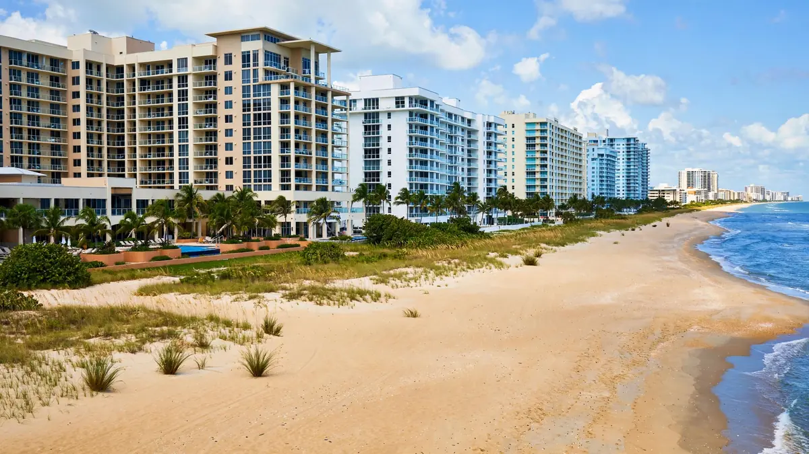

Emergency Water Cleanup in Central Beach, Hollywood FL
ZIP Code: 33019 / 33020

Central Beach blends beachfront condos with hotels, shops, and dining, so water losses here range from a single guest-room leak to a lobby flood. Hollywood Water Damage Experts covers Central Beach and ZIP 33019 with emergency water cleanup for residences and businesses alike. We handle extraction, moisture mapping, structural drying, and the documentation owners, managers, and operators need after leaks, floods, burst pipes, or sewage backups.
Water Emergencies We See in Central Beach
Hospitality and commercial buildings run plumbing hard — guest bathrooms, laundry facilities, kitchens, and restrooms see constant use, and a failed valve or supply line can release a large volume fast. Add storm-season rain pushing through beachfront openings and the occasional backed-up drain after heavy downpours, and Central Beach keeps a varied caseload. Multi-story buildings add vertical spread: water from one floor becomes a ceiling problem on the next.
For businesses, downtime is damage. A wet lobby, closed restrooms, or a musty guest room costs revenue every hour it persists, so speed matters as much as thoroughness. We respond to Central Beach with extraction capacity sized for commercial spaces, moisture mapping that finds every damp assembly, and drying plans designed to return spaces safely to service without cutting corners.
What Local Water Cleanup Looks Like
We confirm the source is controlled, check electrical and slip hazards, and extract standing water with commercial-grade equipment. Then moisture meters and thermal imaging map the full extent — including hidden cavities and lower floors — so drying targets reality, not assumptions. Air movers and dehumidifiers are placed strategically and monitored until readings confirm dryness.
Contaminated losses get containment first: barriers, protective protocols, and removal of unsalvageable porous materials, followed by sanitization. Clean-water jobs move straight to aggressive drying. Either way, we document conditions and work with photos and readings, which matters for both insurance claims and business records.
Services Available for Central Beach (33019 / 33020)
Property owners in Central Beach can request the full range of our Hollywood services, including:
- Emergency water extraction
- Flood cleanup
- Sewage backup cleanup
- Burst pipe cleanup
- Roof leak cleanup
- Structural drying
- Mold remediation support after water events
- Appliance leak cleanup
For the complete list, visit all water cleanup services. Neighborhood coverage for the rest of the city is listed on our service areas page. The main overview of water damage restoration in Hollywood, FL is on the homepage.
Insurance Documentation and Clear Communication
Many sudden water losses are claimed under homeowners or commercial policies. We do not decide coverage. What we provide is a clear record of conditions and work: photos, moisture readings, and a straightforward description of what was done. That information helps you and your adjuster understand the scope. If you need help understanding the next administrative step, we can point you to practical next actions without overpromising on claim outcomes.
How to Get Help in Central Beach
Call (754) 294-7959 for 24/7 emergency response in Central Beach and ZIP 33019 / 33020. Tell us what you see, whether water is still flowing, and any safety concerns such as electrical panels near wet areas. A crew is dispatched with the equipment needed for extraction and drying. For non-emergency questions, the same number reaches the team during normal business windows.
Practical guides — what to do after water damage, how water categories work, and mold timing in Florida — are available on our blog.
Frequently Asked Questions — Central Beach
Can you work around our business hours?
We plan the noisiest work for off-hours when possible and phase drying so you can keep parts of the property operating. Tell us your constraints when you call.
How do you handle multi-floor water spread?
We map moisture vertically — ceilings, wall cavities, and subfloors on every affected level — then dry the full path, not just where water is visible.
Do you document for commercial insurance claims?
Yes. Photos, moisture readings, and equipment logs give your carrier a clear technical record of the loss and the response.
What about odors after a sewage backup?
We remove contaminated porous materials, sanitize affected surfaces, and dry thoroughly — addressing the source of the odor rather than masking it.